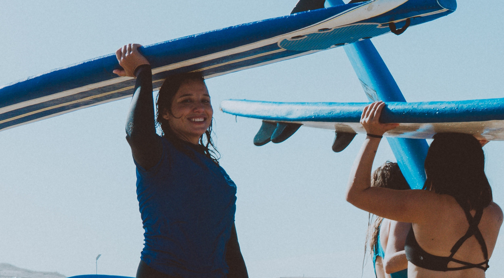
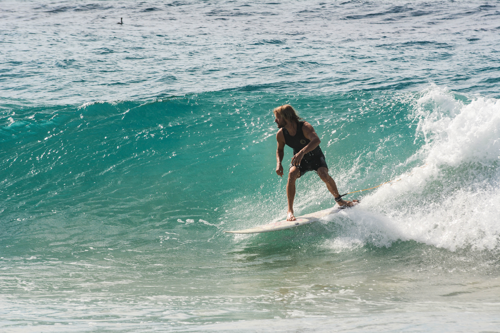

A surfer's lifestyle...
Though the iconic illustration of a surfer is one of a peaceful individual living a simple life, the reality often requires some sacrifices and a lifestyle quite removed from that as viewed by non-surfers.
Actually, living a surfer's lifestyle is not about how exactly you appear; the things you wear or simply getting a surfboard tucked under your arm. It is just about a mindset, commitment to the ocean and accepting the fact that almost everything needs to take second place the instant the waves start to roll in.
People who have fully committed themselves to surfing usually tend to do this in one of two ways - by relocating to the ocean and surfing at a devoted break day in and day out or by giving up the usual trappings of life and traveling the entire world in a continuous search for the perfect wave.

Either way, most people will likely find themselves having to live frugally with the intention to achieve their goal and, for a nomadic surfer, will have to accept living without most of the luxuries and benefits that are regarded as the norm.
This also includes relationships, possessions and all other things which are generally used to indicate security and stability.
The modern surfer is also a citizen of the world. He/she needs to know before he goes. Therefore, if you want to live the ultimate surfing life, tick the following boxes:
1. Know the ocean: learn what the wind is, and how it affects the ocean before it starts making waves;
2. Eat well: fast food is surfing's worst enemy. Design your own diet, and include fruits in your daily habits;
3. Exercise your body: ask a professional to delineate a surf training program that can fit into your weekly agenda;

4. Study the weather charts: improve your surf forecasting knowledge, and anticipate the best swells;
5. Read surf books: it might sound strange, but surf literature will make you a better surfer;
6. Surf more: establish a surfing routine, and don't let winter stop you from catching waves;
7. Don't follow the flock: surfers tend to surf where other surfers are surfing - watch the waves, and make your assessment;

8. Travel and search new waves: plan a surf trip, build your own hierarchy of surf spots, and establish a personal wave quality scale;
9. Respect others: surfers think surfing is a spiritual, blessed sport, but they can be greedy and voracious when it comes to catching waves - showing respect is teaching respect;
10. Stay true to yourself: don't imitate, don't mimic - just let your mind and soul tell you what to do in the waves;